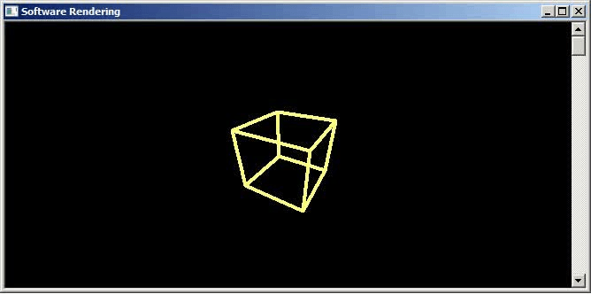
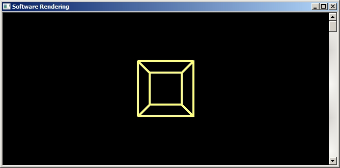
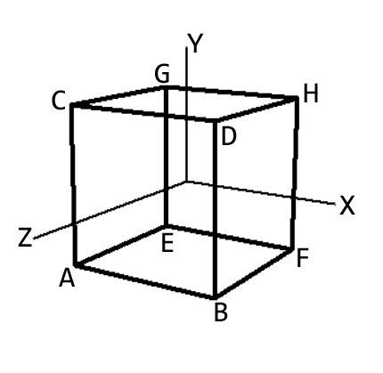
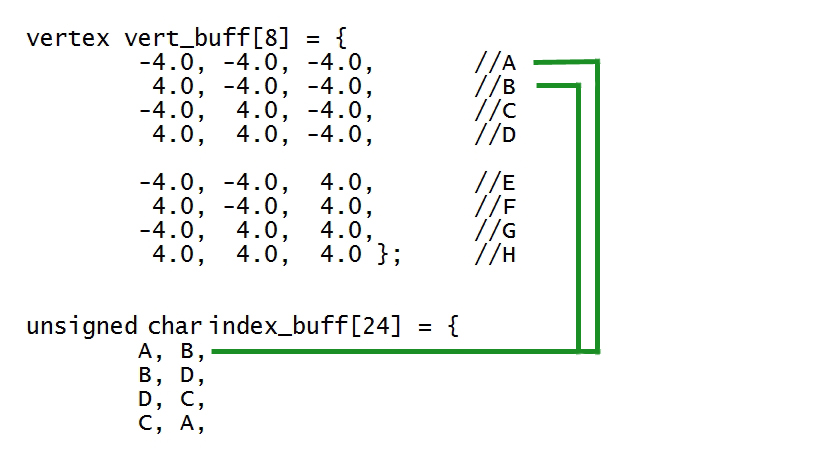

Предполагается что читатель знаком с математикой, а именно необходимо знать:
Рисуем проволочную модель куба на С++
В общем случае, когда есть трехмерная модель, сделанная например в программе моделирования 3DS Max, Blender, Maya:
Так же возможны сочетания этих способов отображения, например текстурированная модель с применением освещения, или модель имеет сплошные цвета но применяется освещение для затенения. Все эти способы мы рассмотрим далее.
Пример вращения куба вокруг оси Y, реализованный на HTML и JavaScript в виде html файла (без матрицы Мира, Вида, Проекции.
Смотреть примерПример вращения куба вокруг оси Y, реализованный на HTML и JavaScript в виде html файла с применением матрицы Мира, Вида, Проекции.
Смотреть примерРезультат работы программы на С++ данной серии уроков показан на анимации ниже.
Результат работы программы для данной главы показан на скриншоте ниже.
Напишем простой конвеер рендеринга. Мы будет отображать проволочную модель куба в окне консольного приложения (для просоты изложения), вращать эту модель куба мы будем в следующих главах. Для начала создадим заготовку приложения, тип приложения Win32 Console Application, среда для разработки, или другими словами IDE можете взять Visual Studio 2019 Community. Данная программа тестировалась на Visual Studio 2019 Community и компилировалась без ошибок как проект Win32 Console Application. Мы создадим и выведем на экран проволочную модель куба. У куба 8м вершин, мы будем соединять эти вершины линиями, используя GDI функции. Мы создадим буфер вершин- массив С++ из 8ми элементов. Что бы знать, в какой последовательности мы будем соединять вершины куба линиями, мы создадим буфер индексов, в котором запишем, например, что первая линия проводиться от вершины 0 (индекс в массиве вершин 0) до вершины 1 (индекс в массиве вершин 1). Для удобства обозначать все 8м вершин куба в массиве вершин буквами, мы возьмем перечисление С++, в котором назначим 0- я вершина в массиве это буква A, 1- я вершина в массиве вершин это буква B и т.д.
enum { A, B, C, D, E, F, G, H };
Обозначения в enum следующие.
A - вершина 0 в массиве вершин B - вершина 1 в массиве вершин C - вершина 2 в массиве вершин D - вершина 3 в массиве вершин E - вершина 4 в массиве вершин F - вершина 5 в массиве вершин G - вершина 6 в массиве вершин H - вершина 7 в массиве вершин
Для работы программы мы возьмем следующую модель куба. Как известно у куба 8 вершин. Как видим на рисунке ниже лицевая грань куба состоит из вершин A, B, C, D, задняя грань куба состоит из вершин E, F, G, H.
Вот какие координаты x,y,z имеют 8м вершин куба на рисунке выше
X Y Z
-4.0, -4.0, -4.0 //вершина A
4.0, -4.0, -4.0 //вершина B
-4.0, 4.0, -4.0 //вершина C
4.0, 4.0, -4.0 //вершина D
-4.0, -4.0, 4.0 //вершина E
4.0, -4.0, 4.0 //вершина F
-4.0, 4.0, 4.0 //вершина G
4.0, 4.0, 4.0 //вершина H
Давайте рассмотрим рисунок более детально, в какой последовательности проводятся линии что бы соединить вершины куба.
передняя сторона куба - соединяем линиями вершины A -> B линия #1 B -> D линия #2 D -> C линия #3 C -> A линия #4 задняя сторона куба - соединяем линиями вершины E -> F линия #5 F -> H линия #6 H -> G линия #7 G -> E линия #8 соединяем линиями заднюю и переднюю стороны куба A -> E линия #9 B -> F линия #10 D -> H линия #11 C -> G линия #12
Для наглядности сначала просто очистим экран, и проведем одну линию на экране в координатах v1(50, 50) и v2(200, 200). Вы можете скопировать эту программу в окно Visual Studio.
#define _WIN32_WINNT 0x0500 //необходимо для вызова GetConsoleWindow()
#include <windows.h>
#include <conio.h>
#include &lmath.h>
HWND hWnd;
void Draw_Line()
{
//получаем размеры клиентской области окна
RECT rc;
GetClientRect(hWnd, &rc);
//получаем контекст рисования
HDC hDC = GetDC(hWnd);
//создаем кисть, сохраняем старую кисть
HBRUSH hBrush = CreateSolidBrush( RGB ( 0, 0, 0) );
HBRUSH hOldBrush = (HBRUSH) SelectObject(hDC, hBrush);
//очищаем экран, можно использовать FillRect()
Rectangle(hDC, 0, 0, rc.right, rc.bottom);
//создаем перо, сохраняем старое перо
HPEN hPen = CreatePen(PS_SOLID, 4, RGB( 255, 255, 127 ) );
HPEN hOldPen = (HPEN) SelectObject(hDC, hPen);
//проводим линию на экране
MoveToEx(hDC, 50, 50, NULL);
LineTo(hDC, 200, 200);
//выбираем в контексте старую кисть, удаляем текущую кисть
SelectObject(hDC, hOldBrush);
DeleteObject(hBrush);
//выбираем в контексте старое перо, удаляем текущее перо
SelectObject(hDC, hOldPen);
DeleteObject(hPen);
//удаляем контекст рисования
ReleaseDC(hWnd, hDC);
}
int main ()
{
//получаем HWND консольного окна
hWnd = GetConsoleWindow();
//главный цикл рисования линии
while ( !_kbhit() )
{
Draw_Line();
}
return 0;
}
Линия на экране данного приложения выглядит немного мерцающей, это потому что мы не использовали задний буфер что бы не усложнять материал (задний будет обсуждаться далее в разделе Как добавить задний буфер backbuffer. Задний буфер в трехмерной графике как раз и используется что бы устранить подобный эффект мерцания. Этот эффект мерцания получается за счет того что накладываются друг на друга два процесса- процесс рисования линии в видеобуфере, и процесс чтения видеобуфреа дисплеем и обновление изображения на экране. Поэтому в реальных 3D приложениях, сначала изображение рисуется в задний буффер, а потом задний буфер копируется на экран. Задний буфер это просто массив С++ для хранения цветовых значений RGB, ширина и высота заднего буфера такой как у экрана приложения. После того как мы изображение вывели в задний буфер, мы одним махом копируем этот массив цветов который и есть задний буфер, копируем на экран- т.е. копируем в буфер кадра. За счет этого при использовании заднего буфера отсутствует эффект мерцания изображения. Далее в материале будет изложено практическое применение заднего буфера. В разделе Проволочная модель сферы из треугольников мы отобразим сферу сначала в задний буфер, а потом выведем задний буфер на экран целиком.
Заготовка приложения для рисования куба.
#define _WIN32_WINNT 0x0500 //необходимо для вызова GetConsoleWindow()
#include <windows.h> //основной хеадер програм windows
#include <conio.h> //вызов функции _kbhit()
#include <math.h> //вызов sinf, cosf, sqrtf
HWND hWnd;
void Draw_Cube()
{
}
int main ()
{
hWnd = GetConsoleWindow();
while ( !_kbhit() )
{
Draw_Cube();
}
return 0;
}
Теперь в заготовку приложения добавим структуру и перечисление. Структура будет отвечать за хранение одной вершины ее координаты x,y,z.
#define _WIN32_WINNT 0x0500 #include <windows.h> #include <conio.h> #include <math.h> HWND hWnd;//структура хранит описание одной вершины куба struct vertex { float x,y,z; }; //нумеруем вершины куба в массиве вершин как на рисунке enum { A, B, C, D, E, F, G, H };void Draw_Cube() { } int main () { hWnd = GetConsoleWindow(); while ( !_kbhit() ) { Draw_Cube(); } return 0; }
Теперь добавим три массива. Первый массив vert_buff хранит координаты вершин, второй массив vert_buff_transformed результирующий для хранения трансформированных (обработанных) вершин- этот массив будет пустой при старте приложения, и третий массив индексов index_buff- которые указывают как мы будем соединять вершины куба линиями, что бы изображение куба получилось как на рисунке выше.
#define _WIN32_WINNT 0x0500
#include <windows.h>
#include <conio.h>
#include <math.h>
HWND hWnd;
//структура хранит описание одной вершины куба
struct vertex {
float x,y,z;
};
//нумеруем вершины куба в массиве вершин
enum { A, B, C, D, E, F, G, H };
//буфер вершин хранит координаты 8- ми вершин куба
vertex vert_buff[8] = {
-4.0, -4.0, -4.0, //A
4.0, -4.0, -4.0, //B
-4.0, 4.0, -4.0, //C
4.0, 4.0, -4.0, //D
-4.0, -4.0, 4.0, //E
4.0, -4.0, 4.0, //F
-4.0, 4.0, 4.0, //G
4.0, 4.0, 4.0 }; //H
//результирующий буфер для 8- ми вершин после преобразований
vertex vert_buff_transformed[8];
/*
переднаяя сторона куба задняя сторона куба
C - D G - H
| | | |
A - B E - F
*/
//буфер индексов
unsigned char index_buff[24] = {
//4-ре линии соединяют вершины передней стороны куба
A, B,
B, D,
D, C,
C, A,
//4-ре линии соединяют вершины задней стороны куба
E, F,
F, H,
H, G,
G, E,
//4-ре линии соединяют вершины передней и задней стороны куба
A, E,
B, F,
D, H,
C, G };
void Draw_Cube()
{
}
int main ()
{
hWnd = GetConsoleWindow();
while ( !_kbhit() )
{
Draw_Cube();
}
return 0;
}
Что такое массив индексов (буфер индексов)? Нам нужно соединить вершины куба как на рисунке выше, при помощи линий. У нас есть 8м вершин куба в массиве вершин. Но программа не знает в какой последовательности эти вершины соединять линиями: от вершины A до B или от вершины A до D, т.е. в какой последовательности проводить линии. Массив индексов указывает как соединять линиями вершины из массива вершин. Например первые два значения в массиве индексов A и B - это значит что программа должна провести линию из точки (вершины) А до точки (вершины) B. У нас в перечислении обозначено что A это ноль 0 а B это 1. Значит, что бы провести первую линию, программа должна взять значения из массива вершин 0 элемент массива, и 1-й элемент массива, и провести линию от вершины 0 до вершины 1, где 0 и 1 это индексы в массиве вершин. Почему и называется буфер индексов (массив С++) что это массив индексов и он хранит индексы из другого массива- массива вершин. В нашем случае первые два элемента массива индексов хранят значения для первой линии, вторые два элемента массива индексов хранят значения для второй линии и т.д. Всего массив индексов содержит 24 элемента, по два для каждой линии, то есть можно всего провести 12 линий. Из этих 12ти линий и состоит проволочная модель куба. У нас есть передняя сторона куба- это 4- ре линии, задняя сторона куба это 4- ре линии, и плюс мы соединяем линиями переднюю и знаднюю стороны куба- это еще 4- ре линии. Всего получаетсяя 12- ть линий, каждая линия состоит из двух точек (вершин) значит массив индексов хранит 24 занчения в массиве.
//буфер индексов
unsigned char index_buff[24] = {
//4-ре линии соединяют вершины передней стороны куба
A, B, //проводим линию от вершины A до вершины B
B, D, //проводим линию от вершины B до вершины D
D, C, //проводим линию от вершины D до вершины C
C, A, //проводим линию от вершины C до вершины A
У нас в буфере индексов всего 24 элемента, поэтому тип данных для индексного буфера возьмем unsigned char - и можем хранить до 255 элементов (sizeof(char) даст результат 1 байт), даже больше чем на надо. Если у вашей модели более 255 индексов в массиве, тип данных для буфера индексов необходимо брать unsigned short int (2 байта), или unsigned int (4 байта).
Если не использовать перечисление enum в программе, то начало буфера индексов будет выглядеть так (непосредственное указание индексов в буфере вершин):
//буфер индексов
unsigned char index_buff[24] = {
//соединяем линиями вершины передней грани куба
0, 1, //проводим линию от вершины 0 до вершины 1
1, 3, //проводим линию от вершины 1 до вершины 3
3, 2, //проводим линию от вершины 3 до вершины 2
2, 0, //проводим линию от вершины 2 до вершины 0
После приготовительных действий перейдем к обработке вершин куба, заполним функцию Draw_Cube(). В функции Draw_Cube() в первом цикле мы обрабатываем 8 вершин куба, во втором цикле проводим 12 линий, соединяя эти вершины.
void Draw_Cube()
{
RECT rc;
GetClientRect(hWnd, &rc);
//первый цикл обрабатываем 8 вершин куба
for ( int i = 0; i < 8; i++ )
{
//получаем следующую вершину из массива вершин
vertex v = vert_buff[i];
//обрабатываем вершину
v.z = v.z + 15.0f;
v.x = v.x / v.z;
v.y = v.y / v.z;
v.x = v.x / ((float)rc.right / (float)rc.bottom);
//преобразуем вершину в экранные координаты
v.x = v.x * rc.right / 2.0f + rc.right / 2.0f;
v.y =-v.y * rc.bottom / 2.0f + rc.bottom / 2.0f;
//запишем вершину в массив обработанных вершин
vert_buff_transformed[i] = v;
}
//подготовка контекста для рисования линий
HDC hDC = GetDC(hWnd);
//создаем кисть черного цвета для очистки экрана
HBRUSH hBrush = CreateSolidBrush( RGB ( 0, 0, 0) );
HBRUSH hOldBrush = (HBRUSH) SelectObject(hDC, hBrush);
//очистка экрана черным цветом
//можно использовать функцию FillRect()
Rectangle(hDC, 0, 0, rc.right, rc.bottom);
//создаем перо желтого цвета для рисования линий
HPEN hPen = CreatePen(PS_SOLID, 4, RGB( 255, 255, 127 ) );
HPEN hOldPen = (HPEN) SelectObject(hDC, hPen);
//второй цикл проводим 12 линий
for ( int i = 0; i < 12; i++ )
{
//получаем две вершины из массива обработанных вершин
vertex v1 = vert_buff_transformed[ index_buff[ i * 2 ] ];
vertex v2 = vert_buff_transformed[ index_buff[ i * 2 + 1 ] ];
//проводим линию от v1 до v2
MoveToEx(hDC, (int)v1.x, (int)v1.y, NULL);
LineTo(hDC, (int)v2.x, (int)v2.y);
}
//очистка контекста после рисования
//выбираем старую кисть
SelectObject(hDC, hOldBrush);
DeleteObject(hBrush);
//выбираем старое перо
SelectObject(hDC, hOldPen);
DeleteObject(hPen);
//удаляем контекст рисования
ReleaseDC(hWnd, hDC);
Sleep(25);
}
В начале функции Draw_Cube() в переменную rc программа получает размеры экрана, в этой области экрана будет проходит рисование куба. Фактически- что такое рисование куба в нашем случае- это просто мы все 8- м вершин куба соединяем при помощи 12- ти линий, и последовательность- то как мы будем соединять вершины линиями, нам говорит массив индексов.
RECT rc; GetClientRect(hWnd, &rc);
Функция Draw_Cube() состоит из двух циклов. В певом цикле for каждая из 8- ми вершин куба подвергается трансформации. Во втором цикле for рисуются 12- ть линий, которые соединяют трансформированные вершины. Рассмотрим первый цикл. Что делает строчка кода в начале первого цикла:
vertex v = vert_buff[i];
В этой строке кода мы в переменную v получаем одну вершину куба из массива вершин.
Следующая строчка кода отодвигает куб от центра координатной системы, и центра экрана в глубину от зрителя на 15 условных единиц. Перед зрителем в глубину располагается положительная ось Z. В даннам случае мы отодвинули куб от центра экрана (от зрителя) на 15 единиц и можем видеть его со стороны. Если этого не сделать- то в начале работы приложения и зритель и центр куба будут находится в одной точке - в центре экрана, и мы не видим полную картину- а именно нам нужен куб вид со стороны. Если не добавить это смещение 15 единиц, мы будем находится в центре куба (внутри куба), а куб будет размещен в центре экрана.
v.z = v.z + 15.0f;
Следующие строки кода создают центральную процекцию. В чем ее смысл? Смысл в том, что объекты которые ближе к зрителю имеют больший размер, а объекты которые расположены дальше от зрителя (наблюдателя) имеют меньший размер- как в реальной жизни. Чем больше величина Z вершины тем меньше будет величина X и Y, то есть чем больше Z вершины тем дальше объект расположен от наблюдателя, и тем меньше X,Y и тем меньше объект в размерах- имитация пространства в реальном мире.
v.x = v.x / v.z; v.y = v.y / v.z;
В следующей строке кода мы кооректируем координату X вершины, так как ширина и высота экрана не совпадают по размерам. Это нужно так же потому что координата X участвует в преобразованях в экранные координаты (будет описано далее), а это преобразование требует учета ширины и высоты экрана. Благодяря этой строчке кода стороны куба на экране выглядят одного размера, пропорционально. Если вы закоментируете эту строку кода, и запустите программу на исполнение вы увидите что куб будет больше в ширину чем в высоту, куб будет шире чем выше по размерам, как как размеры экрана больше по ширине чем в высоту. До этого момента у нас координаты x и y в диапазоне от 0 до 1 так как мы делили на z, а z у нас 15 т.е. больше чем x и x у куба. Предположим экран приложения имеет размер 640 на 480 пикселей. Это пропорции- 640 поделить на 480 будет 1.3. Значит координата x больше чем координата y в 1.3 раза, а сам куб у нас с равными сторонами. Поэтому мы корректируем величину x, так как далее идет преобразование в экранные координаты, т.е. умножение x и y на ширину и выстоту экрана.
v.x = v.x / ((float)rc.right / (float)rc.bottom);
Далее, в следующих строках кода мы координаты трехмерного пространства преобразуем в двухмерные экранные координаты. Почему нам не подходят трехмерные координаты для отображения куба на экране? Трехмерные координаты имеют центр в центре экрана, как положено в математике и как у нас расположены вершины куба, а экран компьютера (для рисования) имеет центр координат в левом верхнем углу- вниз Y координата, вправо X координата начиная от левого верхнего угла экрана. Поэтому, код ниже переносит центр координат из центра экрана в левый верний угол, и мы можем пользоватся функциями GDI MoveToEx() и LineTo() что бы соединить вершины куба линиями, и нарисовать куб. Эти две функции в своих координатах отталкиваются от левого верхнего угла экрана. Во второй строке кода -v.y взято со знаком минус, так как в трехмерной системе координат Y пролегает от центра экрана вверх, а в GDI системе для проведения линий Y пролегает от левого верхнего угла экрана вниз- то есть в противоположном направлении.
v.x = v.x * rc.right / 2.0f + rc.right / 2.0f; v.y =-v.y * rc.bottom / 2.0f + rc.bottom / 2.0f;
Возможен еще такой вариант того же кода для преобразования в экранные координаты (экранное пространство):
v.x = (v.x + 1.0f) * (float)rc.right / 2.0f; v.y = (-v.y + 1.0f) * (float)rc.bottom / 2.0f;
Теперь запишем обработанную вершину в массив обработынных (трансформированных) вершин:
vert_buff_transformed[i] = v;
Далее перед вторым циклом мы готовим кисть для очистки экрана, очистка экрана выполняется при помощи фунции Rectangle(), так же можно использовать функцию FillRect(). После очистки экрана мы создаем перо- это перо толщиной 4 пикселя используется для рисования линий, которыми будут соединятся вершины куба.
HDC hDC = GetDC(hWnd); //создаем кисть черного цвета для очистки экрана HBRUSH hBrush = CreateSolidBrush( RGB ( 0, 0, 0) ); HBRUSH hOldBrush = (HBRUSH) SelectObject(hDC, hBrush); //очищаем экран черным цветом //можно использовать функцию FillRect() Rectangle(hDC, 0, 0, rc.right, rc.bottom); //создаем перо которое используется для проведения линий HPEN hPen = CreatePen(PS_SOLID, 4, RGB( 255, 255, 127 ) ); HPEN hOldPen = (HPEN) SelectObject(hDC, hPen);
Далее после этого кода идет второй цикл- в этом цикле проводится 12- ть линий, которые соединяют вершины куба. Сначала проводятся 4- ре линии соединяющие вершины передней грани куба, затем 4- мя линиями соединяются вершины задней грани куба, затем при помощи 4- х линий соединяются передняя и задняя грани куба как это описано в массиве индексов. Второй цикл начинается строками кода:
//получаем две вершины из массива обработанных вершин vertex v1 = vert_buff_transformed[ index_buff[ i * 2 ] ]; vertex v2 = vert_buff_transformed[ index_buff[ i * 2 + 1 ] ];
Здесь (строки кода выше) мы получаем две вершины что бы провести одну линию (точнее получаем координаты X,Y,Z двух вершин куба) из массива тренсформированных вершин, используя массив индексов, и далее проводим линию которая соединяет две вершины куба.
Далее код просто проводит одну линию, соединяя две вершины куба.
//проводим линию от v1 до v2 MoveToEx(hDC, (int)v1.x, (int)v1.y, NULL); LineTo(hDC, (int)v2.x, (int)v2.y);
В конце функции Draw_Cube() выбирается старая кисть, и старое перо, которые исользовалось до этого. Это конец функции Draw_Cube(). Далее будет описано подробно как в первом цикле вершины проходят преобразования перед тем как будут соединены линиями.
Как видим мы спроецировали трехмернюу модель куба на двухмерную плоскость экрана. Мы соединяли вершины куба линиями, поэтому получилась проволочная модель куба. В чем заключаеться смысл проецирования, и смысл центральной проекции- объекты которые ближе выглядят больше, объекты которые дальше от зрителя, выглядят меньше в размерах. На рисунке мы видим переднюю сторону куба, заднюю сторону куба, и все остальные стороны куба тоже.
Таким образом наш конвеер рендеринга состоит из следующих шагов (первый цикл функции Draw_Cube):
Весь код программы целиком показан ниже, его можно скопирвоать и вставить в окно Visual Studio для проверки.
#define _WIN32_WINNT 0x0500
#include <windows.h>
#include <conio.h>
#include <math.h>
HWND hWnd;
//структура хранит описание одной вершины куба
struct vertex {
float x,y,z;
};
//нумеруем вершины куба в массиве вершин
enum { A, B, C, D, E, F, G, H };
//буфер вершин хранит координаты 8- ми вершин куба
vertex vert_buff[8] = {
-4.0, -4.0, -4.0, //A
4.0, -4.0, -4.0, //B
-4.0, 4.0, -4.0, //C
4.0, 4.0, -4.0, //D
-4.0, -4.0, 4.0, //E
4.0, -4.0, 4.0, //F
-4.0, 4.0, 4.0, //G
4.0, 4.0, 4.0 }; //H
//результирующий буфер для 8- ми вершин после преобразований
vertex vert_buff_transformed[8];
/*
переднаяя сторона куба задняя сторона куба
C - D G - H
| | | |
A - B E - F
*/
//буфер индексов
unsigned char index_buff[24] = {
//4-ре линии соединяют вершины передней стороны куба
A, B,
B, D,
D, C,
C, A,
//4-ре линии соединяют вершины задней стороны куба
E, F,
F, H,
H, G,
G, E,
//4-ре линии соединяют вершины передней и задней стороны куба
A, E,
B, F,
D, H,
C, G };
void Draw_Cube()
{
//получаем размеры области для рисовния
RECT rc;
GetClientRect(hWnd, &rc);
//первый цикл- обработка вершин
for ( int i = 0; i < 8; i++ )
{
vertex v = vert_buff[i];
v.z = v.z + 15.0f;
v.x = v.x / v.z;
v.y = v.y / v.z;
v.x = v.x / ((float)rc.right / (float)rc.bottom);
v.x = v.x * rc.right / 2.0f + rc.right / 2.0f;
v.y =-v.y * rc.bottom / 2.0f + rc.bottom / 2.0f;
vert_buff_transformed[i] = v;
}
HDC hDC = GetDC(hWnd);
HBRUSH hBrush = CreateSolidBrush( RGB ( 0, 0, 0) );
HBRUSH hOldBrush = (HBRUSH) SelectObject(hDC, hBrush);
Rectangle(hDC, 0, 0, rc.right, rc.bottom);
HPEN hPen = CreatePen(PS_SOLID, 4, RGB( 255, 255, 127 ) );
HPEN hOldPen = (HPEN) SelectObject(hDC, hPen);
//второй цикл- соединяем вершины линиями
for ( int i = 0; i < 12; i++ )
{
vertex v1 = vert_buff_transformed[ index_buff[ i * 2 ] ];
vertex v2 = vert_buff_transformed[ index_buff[ i * 2 + 1 ] ];
MoveToEx(hDC, (int)v1.x, (int)v1.y, NULL);
LineTo(hDC, (int)v2.x, (int)v2.y);
}
SelectObject(hDC, hOldBrush);
DeleteObject(hBrush);
SelectObject(hDC, hOldPen);
DeleteObject(hPen);
ReleaseDC(hWnd, hDC);
Sleep(25);
}
int main ()
{
//получаем HWND нашего консольного окна
hWnd = GetConsoleWindow();
//продолжать цикл пока не нажата клавиша
while ( !_kbhit() )
{
//рисуем наш куб
Draw_Cube();
}
return 0;
}